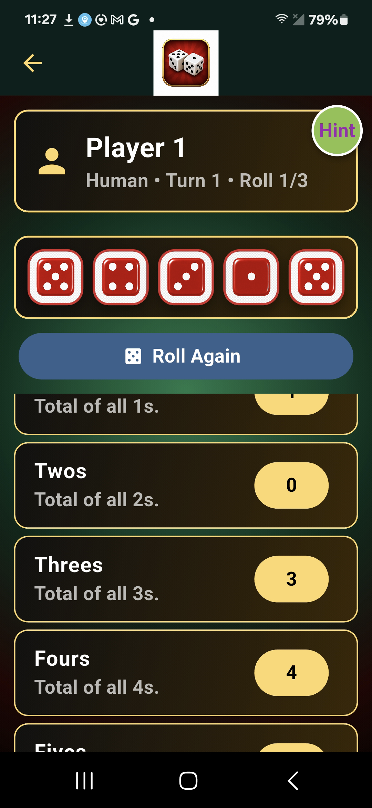

App 01
T&G YZ
A five-dice scorecard strategy game for one to six players. Roll up to three times per turn, hold the dice you want to keep, and choose the best open scoring category. The expanded scorecard includes Ones through Sixes, Small and Large Straights, Full House, Two Pair, Three-, Four-, and Five-of-a-Kind, a Five-of-a-Kind bonus, and Oops as a flexible fallback.
Human and robot players can share one device, while private multi-phone games synchronize dice holds, rolls, scoring, turns, and final results. The strategy-based robot and Hint system evaluate open categories and fallback choices without knowing future rolls.
- 1–6 players
- Human and robot play
- Private multi-phone rooms
- Saved game history
- Upper-section and Five-of-a-Kind bonuses
- Music and celebrations
▶ Play T&G YZ
Web version available